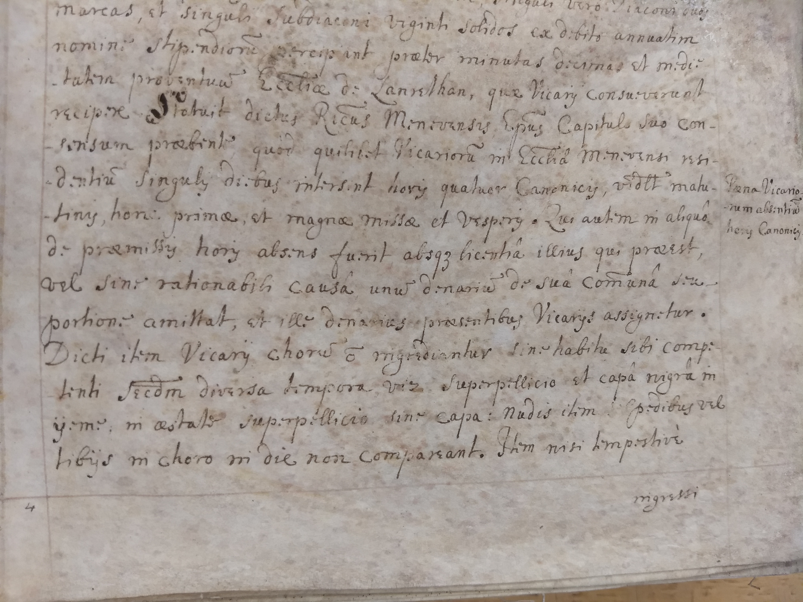
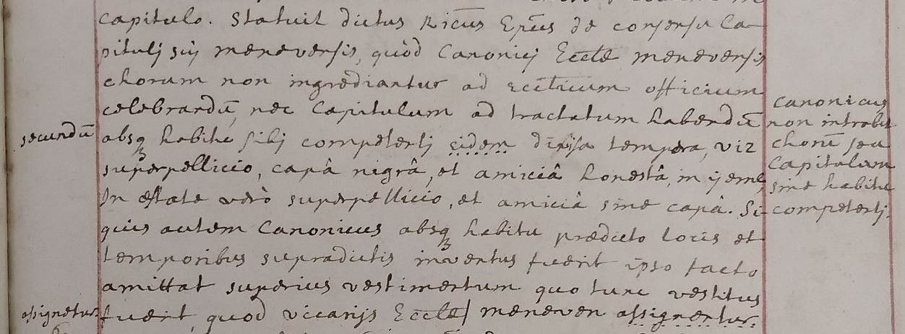

One of the more challenging parts of working with medieval and early modern documents is that their handwriting differed from ours, sometimes significantly. At first, the novice palaeographer may well look at a sheet of illegible chickenscratch or curlicues and despair of ever being able to read it. But with a little dedicated practice, you will find that everything starts to fall into place.
Naturally, it is more challenging if the scribe is writing unfamiliar words (including placenames and personal names), or unfamiliar spellings of familiar words, or in an altogether unfamiliar language.
In this case, we are looking at a Latin document written in 1685. This particular manuscript was damaged by water in the 1720s or 1730s, leading some of the parchment to become translucent or blotchy. Nonetheless, this image is from a reasonably clear part of the text. As you will see, the scribe's handwriting, while somewhat unfamiliar, is at least clear and consistent -- and in fact rather attractive without being over the top. It is of the type that palaeographers call an Italic hand. If it reminds you a bit of an Italic font, that is not surprising: early printers copied established handwriting styles when they created their typefaces.
Begin reading at the bold capital S in the fourth line. My transcription follows; letters in [square brackets] are ones that the scribe skipped by abbreviating the words.
Here is a sample from about a generation later, written shortly before 1719. This is a manuscript on paper rather than parchment, so the color is more even. It is from another copy of the text from which the previous sample came, so some of the abbreviations will be familiar, but it also shows some of the changes of the past thirty years. It no longer hews closely to a specific style such as Italic, and instead would be called a "cursive mixed hand". Begin to read at the top.
This copyist made some errors, then went back and corrected them -- most of them, anyway. "In estate" in line 7 is supposed to be "In estive" (in summer). However, there are two clear corrections. Do you see the dots under the words "eidem" in line 5 and "assignentur", the last word in the image? Rather than defacing a manuscript by crossing out a word entered by mistake, medieval and early modern scribes put a series of dots under the erroneous word to show that it should be deleted. The correct words, "secundum" and "assignetur", are in the gutter margin at left. The note in the outer margin at right is a summary of the contents of the section, put there so a reader could quickly find what he was looking for.
You can also see that there is not a clear distinction (or possibly any distinction) between the letters u and v, or between i and j. In Latin, u and v are the same letter, and i and j are the same letter. English writers only began to make a distinction between the consonant and vowel forms of these letters around this time -- the early eighteenth century. In both this and the previous examples, you can also see a few letters wearing little hats, which look like a circumflex. These are all over terminal vowels -- a vowel that is the last letter of a word. This is also a linguistic quirk (that you do not need to worry about now) and not an abbreviation mark. For now it should be ignored. The word "viz" that ends line 5 is one that you have probably seen before but never quite knew what it meant. It means "namely" or "for example", and in fact was never meant to be prounounced "viz" -- the z is really an abbreviation mark, and the full word is "videlicet", which means exactly what we stil use "viz" to mean. Finally, over the letter y in yeme (end of line 6), you will see a dot. This is a carry-over from the way in which the letter y was written in Middle English in order to distinguish it from a letter called "thorn", which looked like a y but made the th- sound ("Ye Olde" was always meant to be pronounced "The Olde" -- it begins with a thorn, not a wye!)
You will note that there are several abbreviations in these texts. Medieval handwriting, especially Latin, tended to be far more heavily abbreviated, but at least its abbreviations were highly standardized. Even here, in post-medieval hands, the abbreviations are fairly consistent: Ep~us will always mean Episcopus (bishop), and a line over a letter usually means that an m or an n should be inserted after that letter. To learn more, see Charles Trice Martin's book The Record Interpreter. For help deciphering abbreviated Latin words, you can check out the website Enigma. By plugging in the parts of the word you can see, together with certain marks to indicate what is illegible or missing, it will give you all of the possibilities, with links to grammatical notes and dictionary definitions.
For further practice, you might want to check out the excellent palaeography resources site from The National Archives (the British one, not the American).